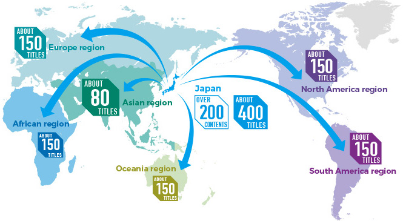

새로운 기업 로고 및 메시지는 당사의 전신인 구 SNK 와 동일한 것입니다. SNK 는 일찍이 전 세계에 수많은 게임을 제공하여 지금도 세계적으로 팬들의 지지를 받고 있는 브랜드이기도 합니다. 이 새로운 기업 로고에는 다시금 원점으로 회귀하여 계속해서 게임을 제공해 가고자 하는 당사의 의지를 담고 있으며, 기업 메시지에는 전 세계의 사람들에게 매력 넘치는 새로운 게임을 창조해 간다는 보편적 의미를 담고 있습니다. SNK 팬 여러분께는 ‘SNK’ 브랜드의 부활을, 새로운 팬 여러분께는 신생 ‘SNK’의 탄생을, 강한 인상을 담은 기업 로고 및 메시지라 생각합니다. 당사는 ‘SNK’의 이름 하에 앞으로도 SNK 의 IP 를 중심으로 한 게임 사업을 확대해 갈 것입니다. 앞으로의 ‘SNK’에 부디 많은 기대를 부탁드립니다.
우리는 타이틀을 개발하는 동안 가장 앞선 기술을 사용하며 중부 유럽에서 최고의 장비를 갖춘 모션 캡처 스튜디오를 소유하고 있습니다. 자체 게임 엔진 개발도 독특합니다. Real Virtuality 엔진은 꽤 오랫동안 Arma 시리즈의 핵심 역할을 했습니다. Bohemia Interactive Simulations에서 개발한 VBS 훈련 플랫폼을 사용한 미국과 영국 군대에서도 그 수많은 품질을 높이 평가했습니다 . 우리는 2021년에 새로운 멀티 플랫폼 Enfusion 엔진을 공식적으로 출시했습니다 . 이 엔진은 Bohemia Interactive에서 미래 게임을 제작하기 위한 가장 까다로운 요구 사항을 충족하도록 설계되었습니다. 우리는 또한 Unity 와 Unreal Engine을 사용하여 작업합니다 . 우리 게임은 PC, Xbox, PlayStation , Nintendo Switch 는 물론 iOS 와 Android 에서도 사용할 수 있습니다 . 우리 스튜디오는 또한 직원뿐만 아니라 소규모 독립 게임 스튜디오 및 개인으로부터 흥미로운 아이디어를 개발할 수 있는 프로젝트인 보헤미아 인큐베이터 의 본거지이기도 합니다 . 우리의 지원은 출판 및 마케팅과 함께 기술 및 개발에 중점을 두고 있습니다. 당사의 Creator DLC 프로그램을 통해 타사 개발자는 Arma 3에 대한 고유하고 새로운 콘텐츠를 제작하여 재정적 보상을 얻을 수 있습니다. 전쟁 시뮬레이션은 우리 게임의 핵심을 구성합니다. 과장이나 이상화 없이 전쟁을 있는 그대로 묘사하고 있다. 우리 게임은 전쟁에서 가장 취약한 집단, 즉 무고한 민간인에게 영향을 미치는 복잡한 문제를 회피하지 않습니다. 우리는 전쟁처럼 끔찍한 일에도 그 자체의 규칙이 있으며, 이는 민간인의 건강, 생명 및 재산을 보호하는 데 필수적임을 설명함으로써 플레이어를 교육하려고 노력합니다. 이것이 바로 우리가 국제적십자위원회 (ICRC) 와 긴밀히 협력하는 이유입니다.예를 들어 Arma 3 의 Laws of War DLC는 민간인을 염두에 두고 개발되었습니다. DLC 판매 수익금은 전쟁 피해 지역의 ICRC 활동에 기부되었습니다.
SNK에서 제공 중인 게임의 제품 및 서비스를 소개합니다.
SNK의 주요 콘텐츠 및 라이선스 상품의 사례를 소개합니다.
SNK의 메세지 및 화사개요를 소개합니다.